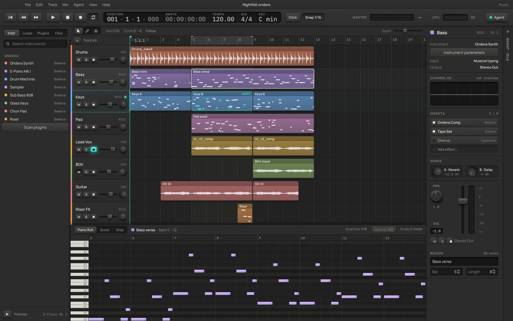
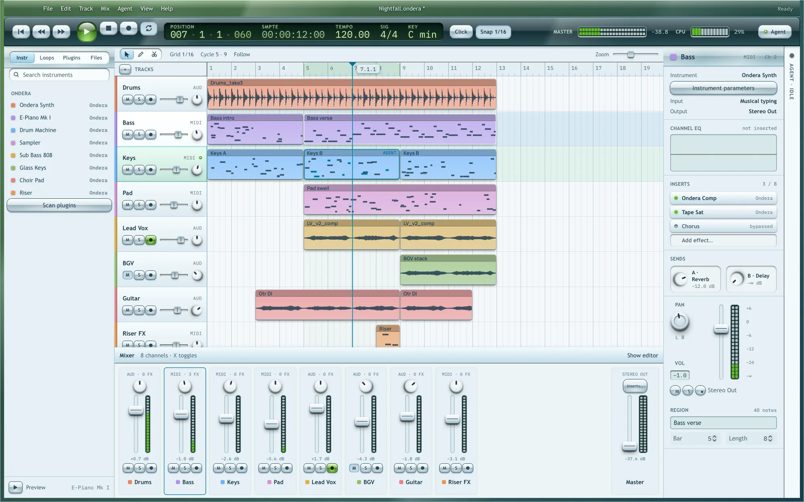

Ondera is a complete DAW: record while you hear yourself through your effects, arrange, edit MIDI, mix on a real mixer and export stems, with 34 stock plugins and your own VST3, CLAP and Audio Units. When you would rather not quantise forty notes by hand, ask the built-in agent. It works on the same session, and every edit it makes is one undo away.
Version 0.8 · free and MIT licensed · macOS, Windows, Linux · no account, no subscription, no telemetry
Untitled session — OnderaInteractive web preview
001.01.00100:00:00:00
Tempo120.00
Sig4 / 4
SectionIntro
CPU
A browser sketch of the window: Space plays, a marker jumps to its section (double-click loops it), M mutes and I cycles a track’s monitoring. The real thing is below.
New in 0.8
Hear yourself. Play with feeling. Shape every clip.
0.8 is about the moment you press record and the hour after it: monitoring through your effects, the full expression of your keyboard, fades, clip gain and section markers, and exports that fit wherever the song goes next.
Recording
Hear yourself through the effects
Input monitoring runs through the track’s own inserts and fader, so you sing into the reverb and compressor you will mix with. Each audio track has Off, Auto and On: Auto listens while the track is armed and again while it records. Monitoring shares one input stream with recording, so it does not drop out when the take starts.
OffAutoOn
Set the buffer size in Settings for less delay, and Ondera shows the input and output latency it measured.
Laptop recording
No howl from the built-in mic
The built-in microphone into the built-in speakers would feed back, so that pairing stays muted until you choose Monitor Anyway. Headphones and audio interfaces are never affected.
MIDI
Your keyboard’s expression, kept
Mod wheel, sustain, pitch bend and pressure reach the instrument as you play, are recorded into the clip, and can be drawn in a controller lane under the piano roll.
Editing
Fades and clip gain
Drag the fade-in and fade-out handles on an audio clip and pick the curve. Turn one loud take down with its clip gain and leave the fader where the mix wants it.
Arranging
Markers for song sections
Name the intro, verse and chorus on the ruler, jump from one to the next, and loop a section while you work on it.
Export
WAV, FLAC and Ogg Vorbis
Bounce the mix or the stems as WAV, FLAC at 16 or 24-bit, or Ogg Vorbis for small files, and bring Ogg files back in. AIFF and MIDI export are still there.
Mixing
Sample-accurate automation
Automation lands on the sample it is drawn on instead of once per audio buffer, so quick volume rides and filter sweeps stay tight.
Plugins
One row per plugin, better folders
The browser lists each plugin once instead of once per channel layout, and far fewer end up in Other Effects. Native Ondera plugins gain controllers, timed parameters, their own state, tails and latency; older ones still load.
Control
160+ commands, one clipboard
The window, the CLI, MCP clients and the built-in agent share more than 160 commands. Copy a clip in the window and paste it from the command line, or the other way round.
The actual window
Not a mock-up. This is what you download.

Arrange and edit. Real decoded waveforms, a piano roll with score and step views, and the channel strip always in reach.

Mix. Press X for every channel side by side with live meters. Shown in the Skeuomorphic theme; Modern and Frutiger Aero ship too, each in dark and light.
Features
Everything between an idea and a bounced master.
Record and arrange
Arm a track, hear yourself through its effects and watch the level before you sing. A count-in clicks you in while the input opens, so the first word is never clipped. Name sections with markers and loop them; split, trim, fade, duplicate, copy and paste, and snap from whole bars to 1/64. Drop audio (WAV, AIFF, FLAC, MP3, Ogg, AAC, CAF, even 5.1) or a MIDI file straight onto the window.
Three MIDI editors
Piano roll, score and step views on the same notes, with a controller lane for mod wheel, sustain, pitch bend and pressure. Quantise, humanise, legato, velocity ramps, fit to scale and transpose, from the menu or ⌥↑⌥↓.
A real mixer
Fader, pan, mute, solo, arm, input monitoring and a live meter per channel, eight inserts a strip, reverb and delay buses, a master chain, clip gain and sample-accurate automation for any parameter.
34 stock plugins, sorted by sound
Eleven instruments, from a polysynth, an electric piano and a tonewheel organ to an 808, an analog bass and a string ensemble. Twenty-three effects: compressor, EQ, tape, reverb, echo, de-esser, flanger, pitch shifter, lo-fi and a pump that ducks on the beat without sidechain routing. Each stock panel draws what it is doing from the same maths as the audio.
Your plugins too
Hosts VST3, CLAP and macOS Audio Units, scanned in a separate process so one bad plugin cannot take the app down. One browser row per plugin, filed by sound with favourites and recents. State is saved inside the project.
Rhythm Lab and takes
Generate Euclidean grooves you can audition before committing. Keep up to eight protected variations of a session and flip between them A/B.
Export that fits the job
Mixes and aligned track stems as WAV (up to 96 kHz, or 32-bit float), AIFF, FLAC at 16 or 24-bit, or Ogg Vorbis. Export a selected range, or 960-PPQ MIDI, and import MIDI files the same way.
Fast hands
⌘P opens a command palette with every command by name. Single-key transport, tools and track toggles, and a shortcut sheet generated from the real bindings.
Hard to lose work
Rolling recovery snapshots, a recovered-take rescue for interrupted recordings, saves that never replace a good file with a bad one, and Ed25519-signed updates.
Every plugin you own is filed by what it does. One colour per sound family, from the browser to the front panel.
Synths
Keys
Bass
Drums
Pads
Samplers
Textures
Dynamics
EQ & Filter
Distortion
Modulation
Space & Time
Pitch
Utility
Switching
What moving over actually looks like.
No DAW reads another DAW’s project files, and Ondera does not pretend to. Here is what comes with you, what is better on this side, and what is not here yet, so you can decide with the facts.
Comes with you
Your plugins. VST3 and CLAP on every platform, Audio Units on macOS.
Your audio. Bounce stems from the old project and drop them in. They land as clips on audio tracks.
Your MIDI. Standard MIDI files import as regions and export back out. Your keyboard’s mod wheel, sustain and pitch bend are recorded as you play.
Your habits.Space plays, R records, C cycles, ⌘T splits, ⌘D duplicates, MS mute and solo, I monitors.
Better on this side
Free, for good. MIT licensed. No tiers, no dongle, no account, no track limit.
Linux included. Every release ships Linux builds from the same pipeline and tests as macOS and Windows.
An agent that can actually edit. Not a chatbot beside the DAW: it runs the DAW’s own commands, in your undo history.
Scriptable end to end. More than 160 commands from a CLI or any MCP client, answered in under a millisecond each, or hundreds at once as a single undo step. Render a project headless with one line.
A file you can read. Projects are plain JSON with the audio embedded, not an opaque binary.
Not here yet
Time stretching and warping.
Take comping.
Tempo changes inside a song.
User-defined buses and groups beyond the two sends.
MP3 export, VST2 and AAX.
If your work depends on one of these, keep your current DAW for that job and try Ondera for writing and arranging.
Agent
Ask for the edit. Keep the undo.
The agent panel streams its reply while it works and shows one card per command it runs. It uses the model you already pay for: Codex or Claude Code from their CLIs, an Anthropic or OpenAI key, or any OpenAI-compatible endpoint, including a local one. Nothing leaves your machine unless you connect a provider.
Slash commands for the common asks./beat, /chords, /humanize, /mix, /arrange, /diagnose and more, or plain language.
Undo from here. The Changes tab lists every change the agent made, a batch of edits as one entry. Roll back to any point, or redo forward again.
On a leash you hold. Permissions gate file access, transport, replacing the session, settings and quitting. Off means off, for the panel and for MCP clients alike.
Command layer
One command layer. Four clients. None of them privileged.
The desktop window, command-line tool, MCP server and built-in agent share more than 160 validated commands for sessions, transport, tracks, notes, plugins, presets, automation, settings, exports, the clipboard and the interface itself. Agent edits use the same undo history as manual edits. Native dialogs and plugin windows remain interface controls.
GUI
Click it
BGVAudio
The window’s button dispatches track.setMute through the command store. Persistent edits share the session’s undo and redo history.
MCP tools expose the same parameter schemas, plus prompts and resources for settings, plugins and presets. The built-in agent uses the same tools with Codex CLI, Claude Code CLI, an Anthropic or OpenAI key or any OpenAI-compatible endpoint; prompts and tool results go to the provider you choose.
These examples reflect the browser preview’s store. Mute BGV above and watch the displayed values follow.
Themes
Three looks. Dark and light. Same instrument.
Pick the one you want to stare at for six hours. Every theme is computed, not painted: one neutral ramp in OKLCH, one accent, and text contrast that is tested on every surface in both modes. This page is wearing the same tokens as the app, so choose one and watch everything follow, the preview above included.
Material system
The same controls, re-lit by the theme.
Every control is built from a handful of material recipes: raised, pressed, lit, groove, well, knob, fader cap. A theme does not redraw them, it re-lights them. Skeuomorphic gives each one a specular edge, a darkening face, a contact line and a soft drop. Modern keeps only the line. Aero turns the face into a lens. Try the rack, then change the theme.
Gain
-6.0 dB
drag up / down, or arrow keys
Level
+60-6-12-24-∞
drag the cap
States
RaisedPressedLit
every recipe lives in one tokens file
Recipe
1Rampone neutral hue, surfaces placed by OKLCH lightness
2Lighthighlight and shade strengths per mode, not per control
3Accentone colour for focus, playhead and the agent
4Prooftext contrast tested on every surface, six times
Architecture
API first. The window is just one client.
Ondera’s desktop window, CLI, MCP server and built-in agent share a Rust command registry and session store. The window is a Tauri 2 shell with a React renderer in the system WebView; the session, undo history, plugins and the real-time audio callback stay in Rust, and no audio runs in JavaScript.
Desktop windowTauri 2 · React renderer
CLIgenerated from the registry
MCP servergenerated from the registry
Built-in agentCodex · Claude Code · API keys
ondera-enginecommand registry · session store · model · undo · dispatch(command)Rust session model · validated edits · shared history
prepared graphs · bounded queues
Audio enginenative Rust DSP, sample-accurate automation and device audio34 stock plugins on the Rust plugin SDK · native (ABI 1 and 2), CLAP, VST3 and macOS Audio Units
Edits go through the store. The interface keeps hover and drag previews local. Persistent changes dispatch commands and participate in undo.
One shared registry. CLI help, MCP tool schemas and the agent’s tool list come from the same command definitions. Compact queries inspect the arrangement without returning opaque plugin state.
Agents on a leash. Permissions gate file operations, transport, replacing the session, settings and application control for the panel, MCP clients and --agent. Every agent edit can be undone from the Changes tab.
Changelog
Release history, in plain words.
Each release must pass the engine tests and a scripted full-song session on all four platforms before it ships. The full notes, with checksums, are on GitHub releases.
0.8This release
Monitoring, controllers, fades and markers
Input monitoring through the track’s inserts and fader (Off, Auto, On), a guard against built-in mic feedback, a buffer-size setting and measured latency.
Mod wheel, sustain, pitch bend and pressure played, recorded and drawn in a controller lane.
Fades with curves and clip gain on audio clips; markers for song sections.
FLAC and Ogg Vorbis export beside WAV, for mixes and stems; sample-accurate automation.
Plugin ABI 2, one browser row per plugin, more than 160 commands and a clipboard shared with the CLI.
0.7
Recording, sound folders, a faster bridge
A count-in before each take and a microphone meter on armed tracks.
Every plugin filed in colour-coded sound folders, with favourites and recents.
Ten new stock plugins, from a tonewheel organ and a string ensemble to Pump.
AIFF export, more import formats, surround files downmixed; 150 commands answered between frames.
Time stretching, take comping, tempo changes inside a song, user-defined buses and MP3 export are not built yet. No VST2 or AAX. External plugin editors open on macOS only. Windows and Linux windows are built and tested in CI but not yet checked by hand. Packages are ad-hoc signed, not notarized; Windows binaries are unsigned.
FAQ
Fair questions.
Is it really free? What is the catch?
Yes. Ondera is MIT licensed, with no paid tier, account or track limit. The agent uses whichever model provider you connect, and that provider may charge you; the DAW works fully without one.
Do I have to use the AI?
No. The agent stays idle and nothing is sent anywhere until you connect a provider and send a prompt. Every feature on this page except the agent works offline.
Can I hear myself while I record?
Yes. Set the monitor button beside Arm to Auto or On and you hear the input through the track’s inserts and fader. Use headphones: with the built-in microphone and the built-in speakers together, Ondera keeps monitoring muted so it cannot feed back, until you choose Monitor Anyway. A smaller buffer in Settings > Audio means less delay, and Ondera shows the latency it measured.
Which file formats can I export?
WAV (16 or 24-bit, or 32-bit float), AIFF, FLAC (16 or 24-bit) and Ogg Vorbis, for the whole song, a range or one file per track, plus MIDI files. MP3 is not built: there is no MP3 encoder yet that fits the project’s licence and build, so Ogg Vorbis covers small files for now.
Will my plugins work?
VST3 and CLAP plugins load on macOS, Windows and Linux, and Audio Units on macOS, as long as they match your processor architecture. VST2 and AAX are not supported. Native plugin editor windows currently open on macOS only; elsewhere you get Ondera’s generic parameter panel. Native Ondera plugins built for an older version keep loading.
Do my keyboard’s mod wheel and sustain pedal work?
Yes. Mod wheel, sustain, pitch bend and pressure reach the instrument while you play, are recorded into the clip, and show up in the controller lane under the piano roll, where you can draw or fix them.
Can I open my Ableton, Logic or FL Studio projects?
No, and no other DAW can either. Export stems and MIDI from the old project and import them. It takes a few minutes per song.
macOS says the app cannot be opened.
Builds are ad-hoc signed, not notarized by Apple yet. Right-click the app, choose Open, then Open again. You only need to do it once.
Is it stable enough for real work?
It is a young 0.x project. Each release must pass the engine tests and a scripted full-song session (record, edit, save, reopen, export) on all four platforms before it ships, and recovery snapshots run in the background. Keep backups, as with any DAW.
What can the agent touch?
Only what the permission switches in Settings allow. By default it can edit the session, import and export files and run the transport; replacing the session, changing settings and controlling the app are off until you turn them on. Each is its own switch. Whatever it changes is in your undo history.
Download Ondera 0.8
Free and MIT licensed. Archives include the ondera-cli and ondera-mcp companions, and the app updates itself from signed releases.